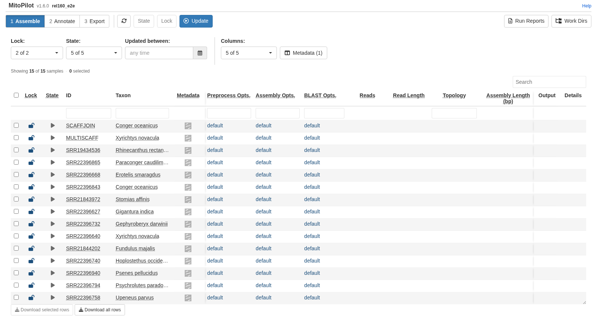

Test Project: Initialize
Test project: 0. Initialize 1. Assemble 2. Annotate 3. Export
MitoPilot takes you from raw Illumina paired-end reads to polished mitogenome records ready for submission to NCBI GenBank. The heavy lifting is a Nextflow pipeline; you run it from an R Shiny app that shows you every sample, assembly, and annotation. MitoPilot automatically curates annotations based on clade-specific rulesets and also allows you to manually adjust annotations when needed.
Start here. This page checks your setup and gets the built-in test project running, then hands off to a page per pipeline module. Work through them in order; the whole test project takes an afternoon at most.
HYDRA Are you a Smithsonian user? Boxes like this one flag the places where usage on the Smithsonian Hydra computing cluster differs from a generic setup. Before starting this tutorial, work through the Hydra Get an R session and Install Nextflow sections. Users can also check out the 2025 Smithsonian workshop webpage, although it is slightly outdated.
Before you begin
MitoPilot needs R, Java, Nextflow, and a container runtime (Docker locally, or Singularity/Apptainer on a cluster), plus about 15 GB of disk for the container image. Installation and Requirements has the full list and the install commands. Work through that page first, then come back here.
Everything in this tutorial happens in R, preferably from RStudio. The only steps that need a terminal are installing Nextflow and, on a cluster, checking on submitted jobs; those are called out where they come up.
Load the package:
library(MitoPilot)You should see a welcome message naming the Nextflow version MitoPilot will use.
HYDRA Hydra setup runs automatically. RStudio Server sessions on Hydra start with a stripped PATH that leaves out the job scheduler engine, Java, and your ~/bin, so Nextflow cannot find qsub and job submission fails. library(MitoPilot) and opening the app both detect Hydra and run hydra_setup() for you: it puts the Hydra Java and job scheduler directories at the front of your PATH and pins a compatible Nextflow version for the session. If the setup message does not appear, call hydra_setup() yourself.
Set up the test project
MitoPilot ships with a small test dataset: 15 samples of pre-filtered Illumina reads, mostly marine fishes. It is deliberately messy. Some samples assemble cleanly, one has far too little data, one produces two competing assemblies, and two produce fragmented assemblies. This allows you to see more complex situations that need user judgment.
library(MitoPilot)
# Anywhere you have space. MitoPilot creates the directory if needed.
wd <- "~/MitoPilot_test/run_01"
new_test_project(
path = wd,
executor = "local",
full_size = FALSE,
Rproj = FALSE
)executor = "local" runs everything on the machine you are sitting at and uses Docker. To run on a cluster instead, see HPC cluster support and pass the matching executor name. full_size = FALSE uses the small pre-filtered reads that ship with the package; TRUE downloads about 10 GB of raw data, which takes much longer to process.
MitoPilot lists the samples as it sets them up, then writes a hidden .config file holding the Nextflow settings for the project directory. The defaults are fine for the test project.
HYDRA Project setup. Pass executor = “NMNH_Hydra” so work is dispatched to compute nodes instead of running on the login or RStudio node. Put projects under /pool or /scratch. Home directories are far too small and projects cannot be run from /store.
You can also bring your own assemblies to MitoPilot for annotation, curation, and export. new_test_project_userAsmb() sets up the equivalent test project, covering the common cases. See Using Your Own Assemblies. If you also have annotations, see Using Your Own Annotations.
Open the app
Once your test project is initialized, run the following in your R session:
wd <- "~/MitoPilot_test/run_01"
setwd(wd) # the app must be launched from the project directory
MitoPilot()
This is a fresh project, so the result columns are still empty: the sample metadata comes from your mapping file, and everything else fills in as the pipeline runs.
Each row is a sample. The numbered buttons at the top left switch between the three pipeline modules, 1 Assemble, 2 Annotate, and 3 Export, which you work through in that order. The refresh button beside them reloads the table from the database.
Clicking a column header sorts alphanumerically. The search box at the top right filters everything, and most columns have their own filter box.
Two columns sit to the left of each sample ID, Lock and State:
- The lock ( unlocked, locked). Unlocked samples are available for the next pipeline run to process. Locking a sample freezes it in the current module and makes it available for the next module. Select samples and use the Lock button to toggle.
- The state. Status of the sample in the current module. The pipeline sets these automatically, but you can override them with the State button. This is how you can park samples you do not want to process yet or reset samples that have already completed the pipeline. There are five states:
| State | Meaning |
|---|---|
| On hold | Skipped by the next Update until you set it to Ready to run |
| Ready to run | Queued: the next Update will process it |
| In progress | Being processed by the running pipeline |
| Success | Finished without errors |
| Failed | Stopped with an error; see the Notes column |
The Annotate module has no In progress state; an assembly waiting to be processed keeps its Ready to run icon until the run finishes.
Test project walkthrough
Now you’re ready to start running the test project samples through each MitoPilot module. Follow the links below to begin.
Where to go next
Once you’re comfortable with MitoPilot, try starting a project with your own sequence data!
Additional articles for you to explore: